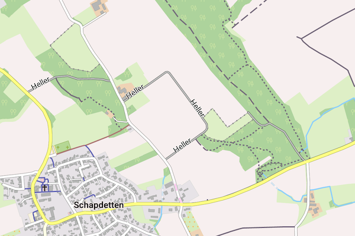

To view the Freizeitkarte maps correctly, a suitable design (theme) is to install and to configure in your maps app. If the design of the Freizeitkarte maps is not installed or enabled, the representation will then deviate strongly from the samples given on this website and many map elements are missing.
Tips concerning download:
- click on the Netbook Icon in the PC browser: the design will be downloaded onto your personal computer
- click on the Locus Map Icon in the Android browser: the design will be downloaded into Locus Map
- click on the OruxMaps Icon in the Android browser: the design will be downloaded into OruxMaps
Design freizeitkarte

The design uses bright colors and is designed for general use.
|
Locus Free / Pro freizeitkarte-locus 0.3 MB |
|
Cruiser, OruxMaps, ... freizeitkarte-v4 0.3 MB |
Design fzk-outdoor-contrast

The design uses bold colors and is designed for "outdoor" use.
|
Locus Free / Pro fzk-outdoor-contrast-locus 0.3 MB |
|
Cruiser, OruxMaps, ... fzk-outdoor-contrast-v4 0.3 MB |
|
c:geo, CacheBox, ... fzk-outdoor-contrast 0.2 MB FINAL RELEASE SUPPORT CANCELED |
Design fzk-outdoor-soft

The design "fzk-outdoor-soft" uses in comparison to "fzk-outdoor-contrast" diminished contrasts.
|
Locus Free / Pro fzk-outdoor-soft-locus 0.3 MB |
|
Cruiser, OruxMaps, ... fzk-outdoor-soft-v4 0.3 MB |